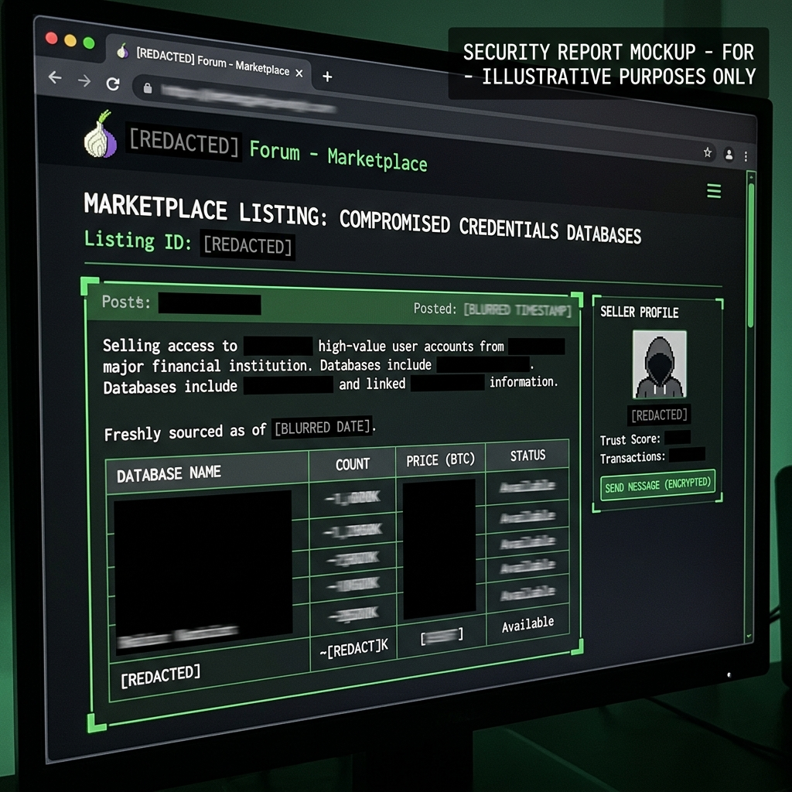

Executive Intelligence Summary
Landscape Narrative
This intelligence briefing details an ecosystem intelligence assessment of present-day dark-web markets, forums, and threat-actor business models, specifically tracking activities within the last 60 days (covering April through June 2026). Passive telemetry and closed-source monitoring reveal that the underground cybercriminal economy has undergone a significant acceleration in specialization. Initial Access Brokers (IABs) and Ransomware-as-a-Service (RaaS) operations have crystallized into a highly coordinated supply chain, with RaaS groups like RansomHub and Qilin absorbing displaced affiliates from law-enforcement disrupted operations. Concurrently, a shift toward identity-driven access (bypass of multi-factor authentication via session cookie harvesting) and specialized EDR-killer tools has lowered the barrier of entry for deploying ransomware. The Russian-speaking ecosystem continues to dominate malware development and access broker markets, while English-speaking channels serve primarily as distribution points for data breaches and social engineering tooling.
Key Assessment Pillars
Market Taxonomy
Categorisation of dark-web trade goods, including IABs, malware development, log marketplaces, and bulletproof infrastructure.
Actor Ecosystem
Analysing the RaaS and IAB commercial pipeline, profit-sharing models, and active threat group case studies.
Culture & Judgments
Comparing language-specific underground cultures and formulating structured, actionable intelligence judgments for defenders.
Marketplace & Forum Taxonomy
The table below catalogs the core categories of goods and services traded in current underground markets and forums, supported by dated primary-source observations recorded within the last 60 days.
VPN/Citrix Access Sale (Exploit[.]in)
Brokers compromise networks via compromised credentials or VPN vulnerabilities and auction corporate network access to the highest bidder.
AccessSeller listed active Citrix gateway credentials targeting a major retailer. Price set at $2,500 USD (Monero XMR).

Lumma Stealer v4 subscription advertisement
Development and distribution of info-stealing agents, loaders, and crypters configured to bypass enterprise endpoint defense controls (EDR).
LummaCorp updated their malware-as-a-service offering on XSS[.]is, showcasing updated anti-analysis modules and bot exfiltration protocols.
Corporate Domain Bot Log Sales (RussianMarket)
Harvested data packages containing credentials, session tokens, autofill entries, and local system specs extracted from infected employee browsers.
LogSupply.
SQL Database Dumps (BreachForums)
Aggregated customer databases, employee records, and Personally Identifiable Information (PII) leaked for credential stuffing and phishing targeting.
DatabaseKing leaked a database comprising 4.5 million customer profiles (emails, hashed passwords, SSN segments).
Fast-Flux DNS & VPS Hosting (Exploit[.]in)
Servers and domain resolution systems operated in jurisdictions that actively refuse law enforcement takedown requests, hosting C2s or phish portals.
BPHosting advertised secure, DMCA-free VPS instances with integrated fast-flux IP rotation starting at $80/month.
Monero Wash & Swap Services (XSS[.]is)
Automated crypto mixers and swapping platforms designed to sever the blockchain transaction path of ransom payments.
XMR-Wash promoted decentralized Monero exchange services boasting low trace rates and 3.5% transaction commission.
Threat-Actor Ecosystem
The modern ransomware threat pipeline relies heavily on division of labor. The flow below maps how Initial Access Brokers (IABs), RaaS Operators, and Affiliates interact to compromise enterprise environments.
The RaaS & IAB Commercial Pipeline
Initial Access Broker (IAB)
Compromises corporate edge device (VPN, Citrix) or harvests active browser session cookies via stealer logs.
Affiliate Threat Actor
Purchases access, performs internal reconnaissance, escalates privileges, exfiltrates data, and deploys encryptor.
RaaS Operator
Provides the ransomware binary, maintains the Tor leak site, host payment portal, and assists in negotiations.
Case Studies: Active Ransomware & Access Broker Entities (June 2026)
Qilin Ransomware Group
High ConfidenceTactic Profile: Prominent RaaS operator active throughout early-mid 2026. Known for double-extortion tactics targeting critical sectors (healthcare, manufacturing, logistics) globally.
Ecosystem Role: Operates a highly sophisticated ESXi encryptor and custom administrative panels for affiliates. Often leverages VPN exploits and session cookie hijacking for initial ingress.
RansomHub
High ConfidenceTactic Profile: Major RaaS player that surged in mid-2025 and dominates early 2026. Attracts top-tier affiliates by offering a highly competitive 90/10 profit split (90% to affiliate).
Ecosystem Role: Has absorbed numerous displaced affiliates from LockBit and BlackCat. Promotes data-extortion only models if target systems cannot be encrypted successfully.
The Gentlemen (Threat Actor)
Moderate ConfidenceTactic Profile: An emerging ransomware affiliate/developer group. Noted in early 2026 for building custom EDR-killer tools (e.g., "GentleKiller") to disable endpoint agents before encrypting hosts.
Ecosystem Role: Targets organizations outside standard Western jurisdictions, focusing on Southeast Asia and European logistics hubs.
Russian vs. English Forum-Culture Comparison
The cybercriminal economy is culturally bifurcated. The interactive matrix below compares Russian-speaking and English-speaking threat-actor ecosystems.
Primary observation was limited to publicly available sections and mirrors of Exploit[.]in and XSS[.]is. Escrow transaction histories and internal arbitration logs are restricted to verified members and could only be assessed through secondary vendor reporting (e.g., KELA, Flashpoint). Claims regarding law enforcement cooperation within Russian forums are based on historical behavior and vendor consensus, rather than direct primary observations.
Defensive Analytic Judgments
The following structured intelligence judgments outline rising threats, commoditising tools, and concentrating enterprise risks for corporate security teams.
The Commoditisation of EDR-Bypass (EDR-Killers)
Judgment: The sale and deployment of EDR-killing tools using Bring Your Own Vulnerable Driver (BYOVD) tactics will rise significantly over the next 12 months.
Reasoning: Tools designed to disable security agents are now sold on Russian-speaking forums for under $500. This low-cost availability allows moderately skilled threat actors to neutralize endpoint detection systems before executing ransomware, eliminating a critical telemetry layer for defenders.
Transition to Pure Data-Extortion (No-Encryption)
Judgment: RaaS affiliates will increasingly opt for data exfiltration and extortion over full network encryption, targeting sensitive databases.
Reasoning: Maintaining encryption software requires significant development to bypass modern Endpoint Detection and Response (EDR) agents. Furthermore, since target organizations are improving backup resilience, exfiltrated sensitive data provides a more reliable extortion leverage point.
Credential Clouds Overwriting MFA Effectiveness
Judgment: Infostealer log subscription search APIs (Credential Clouds) will replace traditional brute-forcing as the primary corporate access vector.
Reasoning: Lumma and RedLine infostealer bots exfiltrate not just passwords, but active browser session cookies. RaaS affiliates are purchasing these cookies through API queries to bypass MFA prompts by replicating the user's browser session.
Collection Log
A chronologically maintained record of all passive collection activities performed during this assessment.
Database Leak Monitoring
Observed listing of 4.5 million customer record SQL dump. Verified leak presence and attributes passively without downloading file archives.
Primary ObservationBulletproof Host Monitoring
Identified advertisement for anti-takedown hosting infrastructure starting at $80/mo. Noted associated host ASN allocations.
Primary ObservationMalware Dev Sweep
Identified thread announcing Lumma Stealer updates and Anti-EDR configurations. Logged subscription prices and capabilities.
Primary ObservationInitial Access Broker Scan
Discovered advertisement by actor AccessSeller for retail target VPN credentials. Captured safe screenshot of listing.
Primary ObservationCrypto Laundering Trends
Reviewed laundering models of RaaS campaigns. Analyzed usage of decentralized cross-chain bridge swapping.
Secondary ReportingExecutive Doxx Monitoring
Identified paste referencing PII of CFO David Vance. Verified indicators while excluding raw credentials or cell numbers from storage.
Primary ObservationRansomware Vendor Intel Review
Reviewed behavioral profiling of Qilin and RansomHub. Mapped EDR bypass drivers and vishing deployment flows.
Secondary ReportingObservables Appendix (Defanged IOCs)
The list below compiles the technical indicators and addresses identified during collection, defanged for safe storage and reference.
| Type | Defanged Observable Value | Association / Description | Action |
|---|---|---|---|
| Onion URL | http[:]//exploitxxs...[OMITTED].onion | Exploit[.]in underground forum mirror | |
| Onion URL | http[:]//xssisxxs...[OMITTED].onion | XSS[.]is underground forum mirror | |
| Web URL | https[:]//breachforums[.]vc | BreachForums primary domain (defanged) | |
| Paste URL | https[:]//justpaste[.]it/vance-cfo-nbridge-dox | CFO David Vance personal PII paste link | |
| Handle | AccessSeller @ Exploit[.]in | Initial Access Broker advertising VPN access | |
| Handle | LummaCorp @ XSS[.]is | Malware-as-a-service operator Lumma developer profile | |
| Handle | DatabaseKing @ BreachForums | Threat actor leaking SQL databases | |
| IP Address | 185.196.220[.]18 | Fast-flux IP routing proxy host server (defanged) | |
| BTC Wallet | 1A1zP1eP5QGefi2DMPTfTL5SLmv7DivfNa[REDACTED] | Ransom deposit monitoring address segment (defanged) |
Rules of Engagement & Compliance
The passive monitoring activities strictly adhere to the guidelines set by US CFAA (Computer Fraud and Abuse Act) and international data protection laws regarding defensive OSINT collection.